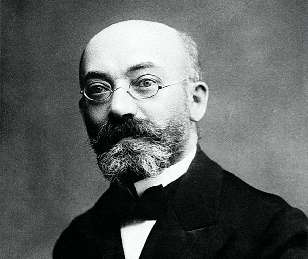

СОН ЗОЛОТОЙ
День рождения великого мечтателя Заменгофа (1859 — 1917), изобретателя универсального языка эсперанто.
«Прекрасная эпоха» конца девятнадцатого — начала двадцатого века была самой эйфорической порой в истории человечества. На волне научного прогресса оно поверило, что разум — царь сущего и что земной рай совсем близко. Кто-то строил планы о создании справедливого общества, кто-то мечтал летать по небу, вылечить все болезни, покорить звезды. Плохого ждали только пессимисты вроде Достоевского.
Революционные, совершенно фантастические проекты возникали в самых разных сферах, в том числе вовсе неожиданных — например в лингвистике.
Российский подданный Лазарь Маркович Заменгоф считал главной проблемой то, что люди не понимают друг друга. Вот если бы все стали говорить на едином языке, удобном и всем внятном — это же было бы совсем другое общество!
Деятельные идеалисты — один из самых лучших продуктов эволюции. Они способны свернуть горы. Заменгоф разработал грамматику и лексику нового языка эсперанто, очень логичного и легко усвояемого. Возникло мощное международное движение эсперантистов. Последний всемирный конгресс, по счету десятый, должен был состояться в августе 1914 года.
Но Разум проиграл. Грянула мировая война. Многие прекраснодушные проекты и мечты разлетелись вдребезги, а некоторые — вроде коммунистического рая — кровавыми, грязными брызгами.
Рухнула и идея всеобщего языка. Вавилонская башня развалилась. Лазарь Маркович умер в 1917 году, с разбитым сердцем, на пороге нового, совсем не прекрасного мира.
И все равно. Честь безумцу, который навеет человечеству сон золотой.